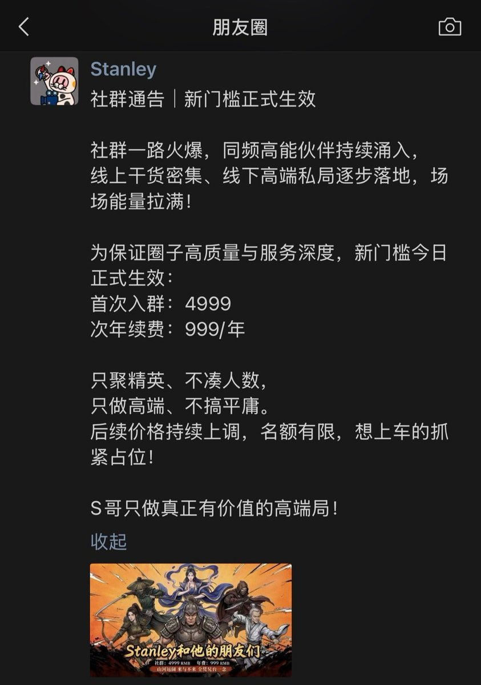

神樂板🌸星璃醬
@y2kstarrychan
@realNyarime 想起雷军说1999交个朋友

奶昔🥤
@realNyarime
看来不少推友都认识S哥（Stanley）
那天看到「雅思119托福9.9的口语母语水平」后就立刻删了微信好友、屏蔽推特
我也是个普通人，赚不到大钱，经不起浪
当了韭菜也不想麻烦民警叔叔介入
怕被笑话、喝茶以及嘲笑
所谓千万投资靠的是推友所助：
现在社群的门槛已经从我交的2k涨到3999、4999到现在的6999 https://t.co/wtxhkgsfZv https://t.co/w0aqUvedCW